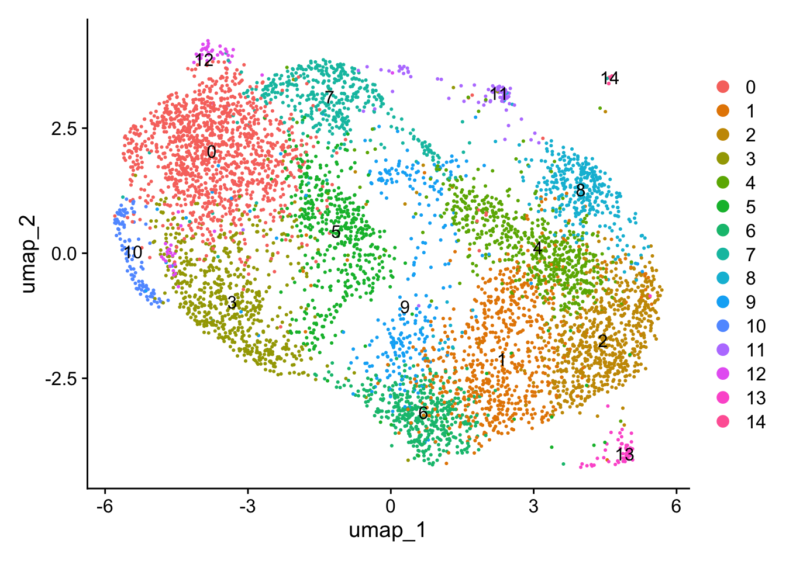
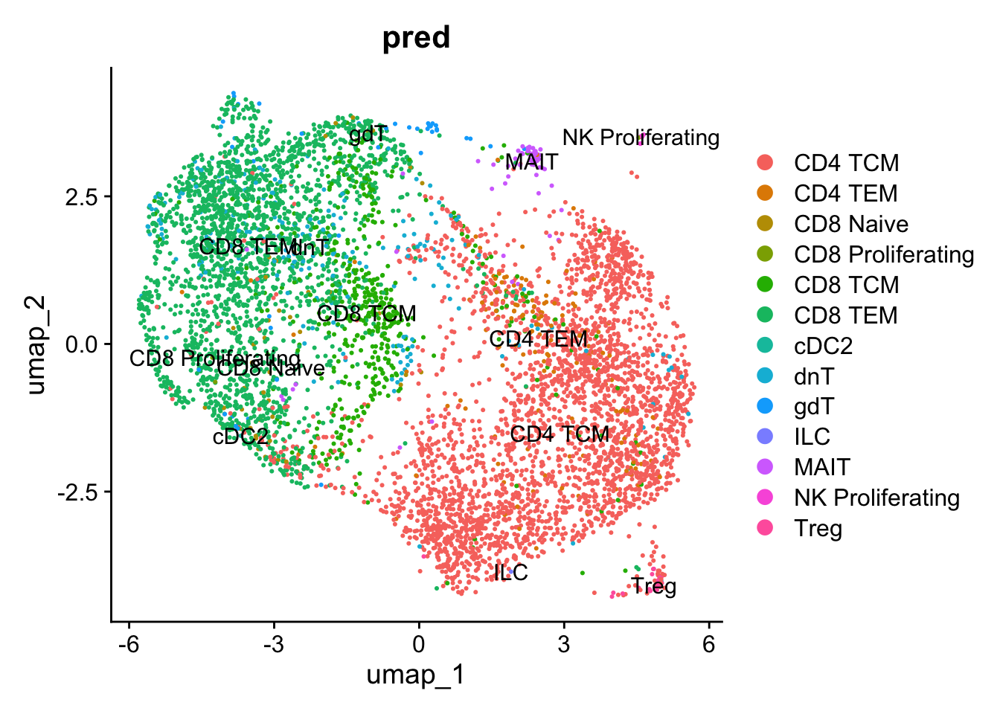
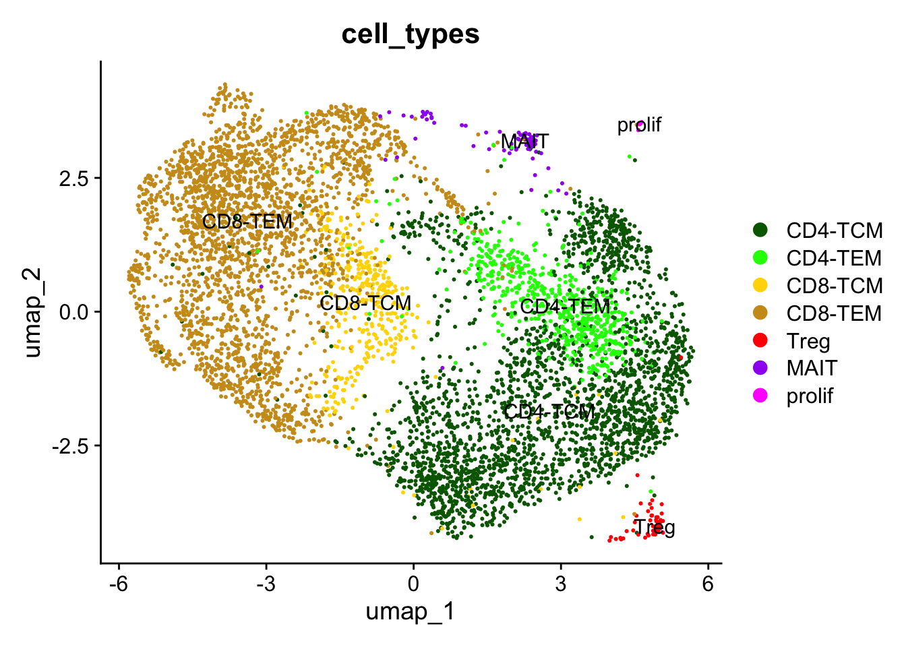
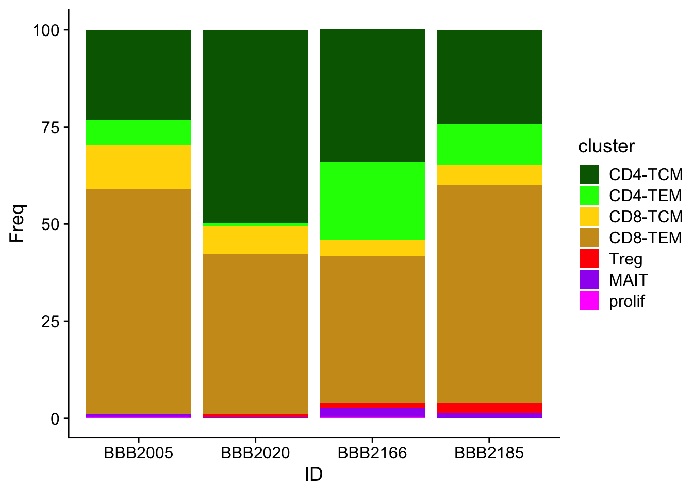

An object of class Seurat
38606 features across 7415 samples within 2 assays
Active assay: RNA (36606 features, 2000 variable features)
9 layers present: counts.BBB2005, counts.BBB2020, counts.BBB2166, counts.BBB2185, data.BBB2005, data.BBB2020, data.BBB2166, data.BBB2185, scale.data
1 other assay present: mnn.reconstructed
4 dimensional reductions calculated: pca, umap.unintegrated, mnn, umap.mnn8.Tcell Subclustering
Subcluster T-cells and annotate
Tidy for cleaner clustering and markers
`%notin%` <- Negate(`%in%`)
H1 <- rownames(FinalFilter)[(grep("^HBB", rownames(FinalFilter)))]
H2 <- rownames(FinalFilter)[(grep("^HBA", rownames(FinalFilter)))]
L <- rownames(FinalFilter)[(grepl("RPL", rownames(FinalFilter)))]
S <- rownames(FinalFilter)[(grepl("RPS", rownames(FinalFilter)))]
M <- rownames(FinalFilter)[(grepl("MT-", rownames(FinalFilter)))]
remove <- c(H1,H2,L,S, M)
TidyDat <- FinalFilter[rownames(FinalFilter) %notin% remove, ]Warning: Layer counts isn't present in the assay object; returning NULLdim(FinalFilter)[1] 36606 7415dim(TidyDat)[1] 36399 7415rm(H1,H2,L,M,S,remove)Subset T-cells, recluster, and normalize
Tcell <- subset(TidyDat, cell_types=="CD4" | cell_types== "CD8")
Tcell$cell_types <- droplevels(Tcell$cell_types)
DefaultAssay(Tcell) <- "RNA"
Tcell <- FindVariableFeatures(Tcell)
Tcell <- RunPCA(Tcell)
Tcell <- RunUMAP(Tcell, reduction = "pca", dims=1:50, seed.use = 502)
Tcell <- FindNeighbors(Tcell, reduction = "pca", dims = 1:50)
Tcell <- FindClusters(Tcell, resolution = 1)Modularity Optimizer version 1.3.0 by Ludo Waltman and Nees Jan van Eck
Number of nodes: 6086
Number of edges: 293344
Running Louvain algorithm...
Maximum modularity in 10 random starts: 0.7314
Number of communities: 15
Elapsed time: 0 secondstable(Idents(Tcell))
0 1 2 3 4 5 6 7 8 9 10 11 12 13 14
1251 708 690 615 597 484 426 406 335 263 109 80 60 53 9 DimPlot(Tcell, reduction = "umap", label = TRUE)
ggsave("plots/5.Tcell/umap_15.svg", width = 6, height = 5)Annotation with assistance of azimuth
FeaturePlot(Tcell, features = c("FOXP3", "CD4", "CD8A", "TOP2A"), reduction = "umap", order = T)
ggsave("plots/5.Tcell/umap_annotation1.svg", width = 6, height = 5)
# Annotation with Azimuth
tmp <- JoinLayers(Tcell)
counts <- tmp@assays$RNA$counts
saveRDS(counts, file = "data/TcellCounts.rds")
pred <- read_tsv("plots/5.Tcell/azimuth_pred.tsv")Rows: 6086 Columns: 4
── Column specification ────────────────────────────────────────────────────────
Delimiter: "\t"
chr (2): cell, predicted.celltype.l2
dbl (2): predicted.celltype.l2.score, mapping.score
ℹ Use `spec()` to retrieve the full column specification for this data.
ℹ Specify the column types or set `show_col_types = FALSE` to quiet this message.rm(tmp, counts)
all.equal(rownames(Tcell@meta.data), pred$cell)[1] TRUETcell$pred <- pred$predicted.celltype.l2
DimPlot(Tcell, reduction = "umap", label = TRUE, group.by = "pred")
ggsave("plots/5.Tcell/umap_predictions.svg", width = 6, height = 5)
DimPlot(Tcell, reduction = "umap", label = TRUE)
table(Tcell$pred, Tcell$seurat_clusters)
0 1 2 3 4 5 6 7 8 9 10 11
CD4 TCM 13 671 647 55 455 32 420 29 327 219 1 5
CD4 TEM 3 25 22 3 77 4 1 1 4 5 0 1
CD8 Naive 5 0 0 27 1 6 0 7 0 0 0 0
CD8 Proliferating 0 0 0 2 0 0 0 1 0 0 0 0
CD8 TCM 48 5 6 35 36 294 3 62 1 1 0 2
CD8 TEM 1053 2 0 480 11 110 1 290 0 9 107 1
cDC2 0 0 0 1 0 0 0 0 0 0 0 0
dnT 124 3 15 1 12 36 0 12 0 26 1 0
gdT 4 0 0 7 0 1 0 3 0 0 0 20
ILC 0 1 0 0 0 0 0 0 0 0 0 0
MAIT 1 0 0 4 5 1 0 1 3 3 0 51
NK Proliferating 0 0 0 0 0 0 0 0 0 0 0 0
Treg 0 1 0 0 0 0 1 0 0 0 0 0
12 13 14
CD4 TCM 0 34 0
CD4 TEM 0 0 0
CD8 Naive 0 0 0
CD8 Proliferating 0 0 0
CD8 TCM 0 0 0
CD8 TEM 54 1 0
cDC2 0 0 0
dnT 1 1 0
gdT 5 0 0
ILC 0 0 0
MAIT 0 0 0
NK Proliferating 0 0 9
Treg 0 17 0# annotate clusters
Tcell$cell_types <- NA
Tcell$cell_types[which(Tcell$seurat_clusters == 0)] <- "CD8-TEM"
Tcell$cell_types[which(Tcell$seurat_clusters == 1)] <- "CD4-TCM"
Tcell$cell_types[which(Tcell$seurat_clusters == 2)] <- "CD4-TCM"
Tcell$cell_types[which(Tcell$seurat_clusters == 3)] <- "CD8-TEM"
Tcell$cell_types[which(Tcell$seurat_clusters == 4)] <- "CD4-TEM"
Tcell$cell_types[which(Tcell$seurat_clusters == 5 & Tcell$pred == "CD8 TEM")] <- "CD8-TEM"
Tcell$cell_types[which(Tcell$seurat_clusters == 5 & Tcell$pred != "CD8 TEM")] <- "CD8-TCM"
Tcell$cell_types[which(Tcell$seurat_clusters == 6)] <- "CD4-TCM"
Tcell$cell_types[which(Tcell$seurat_clusters == 7)] <- "CD8-TEM"
Tcell$cell_types[Tcell$seurat_clusters %in% c(8)] <- "CD4-TCM"
Tcell$cell_types[Tcell$seurat_clusters %in% c(9)] <- "CD4-TCM"
Tcell$cell_types[Tcell$seurat_clusters %in% c(10)] <- "CD8-TEM"
Tcell$cell_types[Tcell$seurat_clusters %in% c(11)] <- "MAIT"
Tcell$cell_types[Tcell$seurat_clusters %in% c(12)] <- "CD8-TEM"
Tcell$cell_types[Tcell$seurat_clusters %in% c(13)] <- "Treg"
Tcell$cell_types[Tcell$seurat_clusters %in% c(14)] <- "prolif"
table(Tcell$pred, Tcell$cell_types)
CD4-TCM CD4-TEM CD8-TCM CD8-TEM MAIT prolif Treg
CD4 TCM 2284 455 32 98 5 0 34
CD4 TEM 57 77 4 7 1 0 0
CD8 Naive 0 1 6 39 0 0 0
CD8 Proliferating 0 0 0 3 0 0 0
CD8 TCM 16 36 294 145 2 0 0
CD8 TEM 12 11 0 2094 1 0 1
cDC2 0 0 0 1 0 0 0
dnT 44 12 36 139 0 0 1
gdT 0 0 1 19 20 0 0
ILC 1 0 0 0 0 0 0
MAIT 6 5 1 6 51 0 0
NK Proliferating 0 0 0 0 0 9 0
Treg 2 0 0 0 0 0 17Tcell$cell_types <- factor(Tcell$cell_types, levels = c("CD4-TCM", "CD4-TEM", "CD8-TCM", "CD8-TEM", "Treg", "MAIT", "prolif"))
DimPlot(Tcell, reduction = "umap", label = TRUE, group.by = "cell_types",
cols = c("darkgreen", "green", "gold","goldenrod3", "red", "purple", "magenta"))
ggsave("plots/5.Tcell/umap_annotation.svg", width = 6, height = 5)Cluster Abundunce across samples
table(Tcell$cell_types, Tcell$ID)
BBB2005 BBB2020 BBB2166 BBB2185
CD4-TCM 116 1362 875 69
CD4-TEM 31 23 513 30
CD8-TCM 58 194 107 15
CD8-TEM 288 1132 970 161
Treg 1 18 27 7
MAIT 4 6 66 4
prolif 1 4 4 0tmp <-table(Tcell$cell_types, Tcell$ID)
round(prop.table(tmp, margin = 2)*100,1)
BBB2005 BBB2020 BBB2166 BBB2185
CD4-TCM 23.2 49.7 34.2 24.1
CD4-TEM 6.2 0.8 20.0 10.5
CD8-TCM 11.6 7.1 4.2 5.2
CD8-TEM 57.7 41.3 37.9 56.3
Treg 0.2 0.7 1.1 2.4
MAIT 0.8 0.2 2.6 1.4
prolif 0.2 0.1 0.2 0.0abundance <- as.data.frame(round(prop.table(tmp, margin = 2)*100,1))
colnames(abundance) <- c("cluster", "ID", "Freq")
ggplot(abundance, aes(fill=cluster, y=Freq, x=ID)) +
geom_bar(position="stack", stat="identity") + theme_cowplot() +
scale_fill_manual(values = c("darkgreen", "green", "gold","goldenrod3", "red", "purple", "magenta"))
ggsave("plots/5.Tcell/Tcell_abundance.svg", width = 6, height = 5)Markers & Heatmap
Join_Tcell <- JoinLayers(Tcell)
Idents(Join_Tcell) <- Tcell$cell_types
table(Idents(Join_Tcell))
CD4-TCM CD4-TEM CD8-TCM CD8-TEM Treg MAIT prolif
2422 597 374 2551 53 80 9 cluster_markers1 <- FindAllMarkers(Join_Tcell,
logfc.threshold = 0.5,
test.use = "roc",
min.pct = 0.25,
only.pos = TRUE)Calculating cluster CD4-TCMCalculating cluster CD4-TEMCalculating cluster CD8-TCMCalculating cluster CD8-TEMCalculating cluster TregCalculating cluster MAITCalculating cluster proliftable(cluster_markers1$cluster, dnn = "roc")roc
CD4-TCM CD4-TEM CD8-TCM CD8-TEM Treg MAIT prolif
13 5 8 28 26 21 1294 write.csv(cluster_markers1, file = "plots/5.Tcell/Tcell_cluster_markers_roc.csv")
Tcell$subtypes <- NA
Tcell$subtypes <- as.character(Tcell$cell_types)
Tcell$subtypes[Tcell$cell_types %in% c("CD4-TCM", "CD4-TEM")] <- "CD4"
Tcell$subtypes[Tcell$cell_types %in% c("CD8-TCM", "CD8-TEM")] <- "CD8"
table(Tcell$subtypes)
CD4 CD8 MAIT prolif Treg
3019 2925 80 9 53 Join_Tcell <- JoinLayers(Tcell)
Idents(Join_Tcell) <- Tcell$subtypes
table(Idents(Join_Tcell))
CD8 CD4 MAIT Treg prolif
2925 3019 80 53 9 cluster_markers2 <- FindAllMarkers(Join_Tcell,
logfc.threshold = 0.5,
test.use = "roc",
min.pct = 0.25,
only.pos = TRUE)Calculating cluster CD8Calculating cluster CD4Calculating cluster MAITCalculating cluster TregCalculating cluster proliftable(cluster_markers2$cluster, dnn = "roc")roc
CD8 CD4 MAIT Treg prolif
26 13 21 26 1294 write.csv(cluster_markers2, file = "plots/5.Tcell/Tcell_subtype_markers_roc.csv")# heatmap
heatmap <- read_excel("plots/5.Tcell/Tcell_cluster_markers_roc.xlsx")New names:
• `` -> `...1`GOI <- heatmap |> filter(top == "top") |> distinct(gene) |> pull(gene)
Idents(Tcell) <- Tcell$cell_types
DotPlot(Tcell, features = rev(GOI), scale = T) + coord_flip() +
scale_color_gradient2(
low = "white",
mid = "grey80",
high = "darkgreen",
midpoint = 0)Scale for colour is already present.
Adding another scale for colour, which will replace the existing scale.
ggsave("plots/5.Tcell/Tcell_heatmap.svg", width = 6, height = 10)save(Tcell, file = "data/8.Tcell.rda")
sessionInfo()R version 4.4.1 (2024-06-14)
Platform: aarch64-apple-darwin20
Running under: macOS Sonoma 14.5
Matrix products: default
BLAS: /Library/Frameworks/R.framework/Versions/4.4-arm64/Resources/lib/libRblas.0.dylib
LAPACK: /Library/Frameworks/R.framework/Versions/4.4-arm64/Resources/lib/libRlapack.dylib; LAPACK version 3.12.0
locale:
[1] en_US.UTF-8/en_US.UTF-8/en_US.UTF-8/C/en_US.UTF-8/en_US.UTF-8
time zone: America/Chicago
tzcode source: internal
attached base packages:
[1] stats graphics grDevices utils datasets methods base
other attached packages:
[1] future_1.49.0 dplyr_1.1.4 readxl_1.4.3 readr_2.1.5
[5] cowplot_1.1.3 ggplot2_3.5.2 Seurat_5.2.1 SeuratObject_5.0.2
[9] sp_2.1-4
loaded via a namespace (and not attached):
[1] deldir_2.0-4 pbapply_1.7-2 gridExtra_2.3
[4] rlang_1.1.6 magrittr_2.0.3 RcppAnnoy_0.0.22
[7] spatstat.geom_3.3-5 matrixStats_1.5.0 ggridges_0.5.6
[10] compiler_4.4.1 systemfonts_1.2.1 png_0.1-8
[13] vctrs_0.6.5 reshape2_1.4.4 stringr_1.5.1
[16] crayon_1.5.3 pkgconfig_2.0.3 fastmap_1.2.0
[19] labeling_0.4.3 promises_1.3.3 rmarkdown_2.29
[22] tzdb_0.4.0 ragg_1.3.3 bit_4.5.0.1
[25] purrr_1.0.4 xfun_0.52 jsonlite_2.0.0
[28] goftest_1.2-3 later_1.4.2 spatstat.utils_3.1-2
[31] irlba_2.3.5.1 parallel_4.4.1 cluster_2.1.8
[34] R6_2.6.1 ica_1.0-3 stringi_1.8.4
[37] RColorBrewer_1.1-3 spatstat.data_3.1-4 reticulate_1.42.0
[40] parallelly_1.45.0 spatstat.univar_3.1-1 cellranger_1.1.0
[43] lmtest_0.9-40 scattermore_1.2 Rcpp_1.0.14
[46] knitr_1.50 tensor_1.5 future.apply_1.11.3
[49] zoo_1.8-12 sctransform_0.4.1 httpuv_1.6.16
[52] Matrix_1.7-2 splines_4.4.1 igraph_2.1.4
[55] tidyselect_1.2.1 rstudioapi_0.17.1 abind_1.4-8
[58] yaml_2.3.10 spatstat.random_3.3-2 codetools_0.2-20
[61] miniUI_0.1.1.1 spatstat.explore_3.3-4 listenv_0.9.1
[64] lattice_0.22-6 tibble_3.2.1 plyr_1.8.9
[67] withr_3.0.2 shiny_1.10.0 ROCR_1.0-11
[70] evaluate_1.0.4 Rtsne_0.17 fastDummies_1.7.5
[73] survival_3.8-3 polyclip_1.10-7 fitdistrplus_1.2-2
[76] pillar_1.10.1 KernSmooth_2.23-26 plotly_4.10.4
[79] generics_0.1.3 vroom_1.6.5 RcppHNSW_0.6.0
[82] hms_1.1.3 munsell_0.5.1 scales_1.3.0
[85] globals_0.18.0 xtable_1.8-4 glue_1.8.0
[88] lazyeval_0.2.2 tools_4.4.1 data.table_1.17.0
[91] RSpectra_0.16-2 RANN_2.6.2 dotCall64_1.2
[94] grid_4.4.1 tidyr_1.3.1 colorspace_2.1-1
[97] nlme_3.1-167 patchwork_1.3.0 cli_3.6.5
[100] spatstat.sparse_3.1-0 textshaping_1.0.0 spam_2.11-1
[103] viridisLite_0.4.2 svglite_2.1.3 uwot_0.2.2
[106] gtable_0.3.6 digest_0.6.37 progressr_0.15.1
[109] ggrepel_0.9.6 htmlwidgets_1.6.4 farver_2.1.2
[112] htmltools_0.5.8.1 lifecycle_1.0.4 httr_1.4.7
[115] mime_0.13 bit64_4.6.0-1 MASS_7.3-64